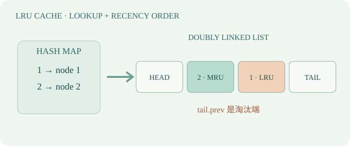
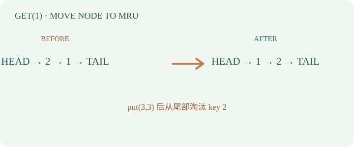

LeetCode 146 · LRU 缓存
哈希表负责找到，双向链表负责排序：如何让 get 和 put 都是 O(1)？
中等 Medium17 分钟Design01 · 题意与约束
容量为 2：put(1,1)、put(2,2)、get(1)、put(3,3)。访问 1 后它成为最近使用项；插入 3 时最久未使用的 2 被淘汰，get(2) 返回 -1。

02 · 从朴素思路走向优化
列表能维护使用顺序，但查找或删除中间 key 需要 O(k)；哈希表能 O(1) 找 key，却不知道谁最久没使用。两种职责需要组合。
get 命中时通过字典找到节点，将它摘下并插到 head 后；未命中返回 -1。put 已存在 key 时更新并移动到头部；新 key 插到头部，超容量时删除 tail.prev 并同步删除字典映射。
03 · 核心状态与不变量
字典 nodes 将 key 映射到唯一链表节点；链表从 head.next 到 tail.prev 按最近使用程度从新到旧排列。head.next 是 MRU，tail.prev 是 LRU。每个真实节点在字典和链表中恰好出现一次。

04 · 跟着样例走一遍
下面展示关键状态快照；每一帧都与示例和代码状态对应。
容量为 2，put(1,1) 后节点 1 插入 head 后面，成为最近使用项。
轨迹是教学用的关键快照，不代表省略的所有中间操作；完整逻辑以 Python 实现为准。
05 · 为什么算法正确？
字典按 key 找节点平均 O(1)；双向链表摘除已知节点、插入头部和删除尾部只需常数次指针更新。访问/写入将节点移到头部，维持最近使用顺序；超容量时 tail.prev 正是 LRU。字典与链表同步增删，保持一一对应。
06 · Python 参考实现
下面是完整的 LeetCode 兼容实现。树节点由评测环境提供；LRU 的链表节点在解法中显式定义。
class _Node:
__slots__ = ("key", "value", "prev", "next")
def __init__(self, key=0, value=0):
self.key, self.value = key, value
self.prev = self.next = None
class LRUCache:
def __init__(self, capacity: int):
self.capacity = capacity
self.nodes = {}
self.head, self.tail = _Node(), _Node()
self.head.next = self.tail
self.tail.prev = self.head
def _remove(self, node):
node.prev.next = node.next
node.next.prev = node.prev
def _add_to_front(self, node):
node.prev, node.next = self.head, self.head.next
self.head.next.prev = node
self.head.next = node
def _touch(self, node):
self._remove(node)
self._add_to_front(node)
def get(self, key: int) -> int:
node = self.nodes.get(key)
if node is None:
return -1
self._touch(node)
return node.value
def put(self, key: int, value: int) -> None:
node = self.nodes.get(key)
if node is not None:
node.value = value
self._touch(node)
return
node = _Node(key, value)
self.nodes[key] = node
self._add_to_front(node)
if len(self.nodes) > self.capacity:
least_recent = self.tail.prev
self._remove(least_recent)
del self.nodes[least_recent.key]
时间与空间复杂度
设容量 k。get 和 put 平均 O(1)，因为哈希表平均 O(1)、链表操作严格 O(1)。空间 O(k)，字典和链表各保存至多 k 个条目。
07 · 一个边界条件，足以改变答案
更新已有 key 也算一次使用，必须移动到 MRU 端。淘汰要从 tail.prev 执行，不是 head.next。删除节点时必须同时修复前后指针并删除字典映射。
把模式迁移到下一题
先不看代码，自己写出状态含义和不变量，再用反例检验边界。真正能迁移的是证明思路，而不是固定模板。